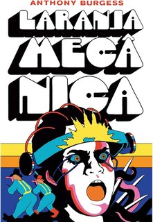

Laranja Mecânica
Anthony Burgess
1962 · Romance
Numa Inglaterra distópica, um adolescente violento é submetido a um tratamento de condicionamento que o impede de escolher o mal — e, com isso, de escolher.
Livro sobre os limites do Estado ao suprimir a escolha individual, retirado por decisão de Estado.
1
OCORRÊNCIA
1
UNIDADE DA FEDERAÇÃO
UF: SC
Motivos: Violência
Mecanismos: Ocultação ou restrição de acesso
EL-007
Coordenadoria regional, SC
Novembro de 2023
Novembro de 2023
JUSTIFICATIVA DECLARADA: Sem justificativa no ofício · determinava armazenar “em local não acessível à comunidade escolar”. A secretaria alegou depois “redistribuição por faixa etária”
Secretaria estadual · escolar
Secretaria estadual · escolar
DECISÃO: Supervisão/estrutura regional da Secretaria de Estado da Educação de Santa Catarina.
ASSINATURA: Waldemar Ronssem Júnior, supervisor regional de Educação, e Anelise dos Santos de Medeiros, integradora regional, assinaram o ofício que determinou a retirada de circulação.
EXECUÇÃO: Estrutura regional da rede estadual de ensino. A coordenadoria específica ainda não foi identificada nas fontes cadastradas.
COMO CITAREstante Livre, observatório de censura de livros, de Nataly Nunes Pinto. Ficha: Laranja Mecânica. Disponível em: https://estante-livre-br.vercel.app/livros/laranja-mecanica.html. Acesso em: [data].